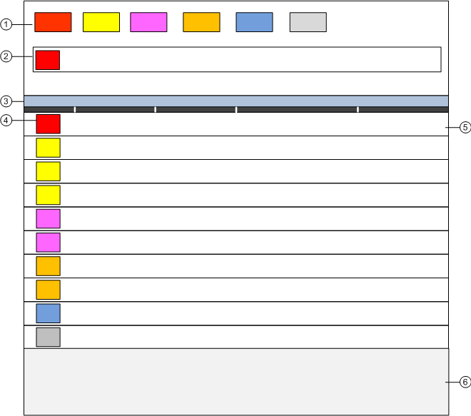

Event List
The Event List displays all the detected alarms with each alarm in a separate row. This window is your main starting point for dealing with alarms.
When opened, the Event List displays in the main work area of the user interface. When it is closed, depending on the profile Event List may be either entirely hidden or collapsed to a vertical bar down the left side of the screen.
The display of Event List is limited to 10000 event lines; if such limit is exceeded, the status bar of Event List will indicate the display limit and the total number of events detected (for example, 10000 of 50000).

Event List | ||
| Name | Description |
1 | Summary bar | Contains a set of event lamps that provide an overview of the events in the system. |
2 | Event Detail bar | In some configurations, prominently displays events that require immediate attention across the top of the screen. |
3 | Title bar | Depending on what you select, the title bar of the Event List shows:
It also contains some icons to open/close the Contextual pane (6), lock the layout and, restore down the window (depending on Client Profile). |
4 | Event button | Graphic indicator of an event in the system. |
5 | Event descriptor | Contains the event button, event details and alarm-handling commands for the event currently being processed. |
6 | Contextual pane | Hidden by default in management station. When open, it provides additional information, actions, and resources about the point in alarm. The following tabs are available:
Detailed Log tab: Lets you view a detailed log of the currently selected event. |
A contextual menu becomes available when you right-click the Event List column headers, and provides you with options to customize the columns that display in Event List, and to print out the whole list of events.